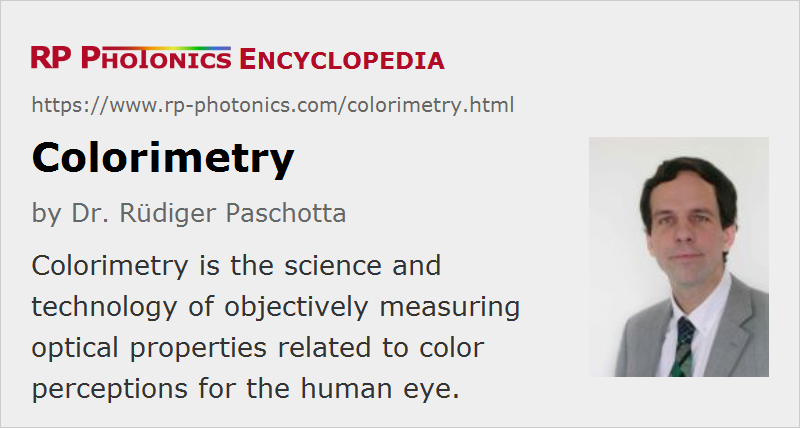

Colorimetry
Definition: the science and technology of objectively measuring optical properties related to color impressions for the human eye
German: Kolorimeter
Categories: light detection and characterization, physical foundations
How to cite the article; suggest additional literature
Author: Dr. Rüdiger Paschotta
Colorimetry is the science and technology of measuring optical properties related to color impressions (color vision). Although one may use instruments like spectrophotometers which measure wavelength-dependent properties – for example, the reflectance spectrum of a sample – in colorimetry the interest is focused on the perception of colors by human eyes rather than on the physical properties of light. Note that the capability of an eye of utilizing spectral information is far more limited than that of a spectrometer or spectrophotometer, for example; the human eye has only three different color receptors, while technical instruments can have hundreds or even many thousands of channels. Therefore, colorimetry is often performed with much simpler instruments.
Essentially, the task of colorimetry is to provide objective measures for optical properties which are responsible for color perceptions. Those can be either properties of light (or light sources) or of objects interacting with light. Some examples:
- One can measure the colorimetric properties of a white light source. Measurement results may include the color temperature and the color rendering index. In the context of illumination, one may also assess the properties of light arriving at a certain location, which can depend not only on the properties of the used light sources, but also of other objects in the room.
- Similarly, one may determine the color balance of a computer or television screen. One may then modify the screen settings such that a certain standard color balance is achieved. While that is usually not relevant for ordinary office work, it can be essential for people working on graphics design or print productions.
- One can also measure color-related properties of absorbing objects such as printed materials or pieces of cloth. For example, one may monitor whether a printer consistently produces the required colors, and how paints and dyes change their color experience due to aging.
As the physical background of colorimetry involves wavelength-dependent properties of light and objects, there is some relation to spectroscopy. However, for most methods of spectroscopy the actual interest is not the color perception, but rather some other aspect such as the concentration of some light-absorbing species. Although such methods may involve different colors of light, they should generally not considered to belong to the area of colorimetry. Nevertheless, the term is sometimes used in that way; the underlying reasoning is that one measures colors in order to derive other quantities of interest from those. More precisely speaking, however, one does not actually measure colors but rather wavelength-dependent absorption – just as in infrared spectroscopy, for example, where colors cannot be involved.
Colorimetry does not only deal with colored light. In fact, the characterization of white light sources with different “tones” of white (e.g. warm yellowish white or cold blueish light) is often of interest.
Before the start of colorimetry as a scientifically founded discipline with carefully worked-out principles, assessments of colors were largely based on subjective impressions, which are easily influenced by a number of factors and take more time to acquire. Modern colorimetric devices and instruments can acquire color-related information with high speed and reliability.
Colorimetry is relevant in a diverse range of application areas including lighting and illumination, digital imaging and printing, fashion and arts.
Color Spaces
For quantitatively specifying color values, one generally uses some kind of color space. Essentially, color values are expressed as coordinates in such a color space; in other words, a color is determined as a linear combination of three primary colors. For example, in an RGB color space the primary colors are some well-defined types of red, green and blue, and the intensity contributions of each to a certain color (the RGB values offset color) can be specified as a measurement result.
One dimension of that color space is actually the total luminance (visual brightness). Therefore, the actual color space may be considered as two-dimensional, if the luminance information is ignored.
The development of colorimetry has led to a substantial number of quite different color spaces. The most dominant color spaces are those developed by CIE, the Commission Internationale de l'Éclairage (International Commission on Illumination). Particularly important color spaces are CIE 1931 XYZ, CIE RGB and LMS. LMS stands for long-, middle- and short-wavelength types of the cone cells of the human eye; the L, M and S tristimulus values indicate how strongly those types of light receptors in the eye are excited by incoming light. The term trichromatic color vision expresses the effect that we have three different color receptors.
Note that the eyes of other animals often use a different combination of color receptors, which leads to substantially different color perception. For example, cats have dichromatic vision, based on only two different color receptors.
See the article on color spaces for more details.
Metamerism
As color perception is based on stimulus values from only three different kinds of color receptors, light sources with quite different spectral compositions may appear with exactly the same color by producing the same tristimulus values. That phenomenon is called metamerism.
As an example, we can consider the following situation:
- Monochromatic yellow light will mostly excite the M and L receptors, with the excitation ratio depending on the wavelength.
- The same excitation ratio and thus the same color impression can be achieved with an appropriate combination of red and green light.
- The same can also be achieved with broadband light, e.g. from a light-emitting diode (LED), having an optical bandwidth of a few nanometers or even tens of nanometers.
The less saturated colors are, the more room is for the phenomenon of metamerism.
Metamerism can cause various problems:
- One may obtain an illuminant metameric failure if two objects appear with the same color (i.e., are color-matched) for illumination with one source but do not match with another source. That happens, for example, when one illumination source is a broadband white light source, while the other one has an optical spectrum with a number of narrow peaks – as is the case for a typical fluorescent lamp. For color-critical applications, e.g. in the context of arts or fashion, such phenomenon may lead to significant deviations of perceived colors. They can be quantified with a color rendering index (CRI) of a light source.
- Observer metamerism color errors can arise from differences in color vision between observers. For example, if a tristimulus colorimeter works based on an RGB color space rather than with LMS tristimulus values, certain spectral absorption features may not produce the same color results as for a human eye.
Metamerism is highly relevant for colorimetry. In fact, the trichromatic nature of human vision, which inevitably leads to the phenomenon of metamerism, is the basis for fundamental concepts of colorimetry. The possibility of metamerism also needs to be carefully considered in various colorimetric applications.
Instruments for Colorimetric Measurements
Instruments which are specifically made for measurements in the context of colorimetry are called colorimeters. They may be applied either to light sources (e.g. in lighting or in displays) or to objects interacting with light, such as dyes and paints. See the article on colorimeters for more details. Devices which only or primarily measure color temperatures are called color temperature meters.
In colorimetry, one may also use other instruments such as optical spectrometers and spectrophotometers, which deliver wavelength-dependent measurement values. From those, one may subsequently calculate photometric quantities of interest – usually by integrating the product of the wavelength-dependent value with some color-matching functions, e.g. for obtaining RGB or LMS tristimulus values. Advanced colorimeters actually rely on that operation principle and also contain the required software for performing the mentioned integrations.
Limitations of Colorimetry
Carefully worked-out colorimetry can deliver objective color information in the sense that it does not depend on particular properties or behaviors of an observer. However, human color perception is subject to a variety of influences. The most important ones are explained in the following:
- The spectral response of the cone cell receptors in the human eye is not exactly the same for all persons. This is particularly obvious for persons with striking limitations of color perception, e.g. red–green color blindness. However, there are many persons with a slight form of color vision deficiency (often some kind of anomalous trichromatic vision). Those are often not aware of any such limitation of their vision, but may have significant deviations from the average color perception of human beings. Obviously, results of colorimetric measurements, which are based on a standard human observer, cannot accurately predict the color perception of persons with such vision deficiencies.
- The color perception may also be modified by a wavelength-dependent absorption in the eye, e.g. in the lens. It is common that aging of the eye leads to increased absorption in the short-wavelength region, reducing the sensitivity to blue light.
- Further, the color perception of an object can be strongly influenced by other colors occurring in the environment, and also by the viewing direction of the object, relative to the direction of the most accurate viewing. Such influences can be minimized under optimized experimental settings, which e.g. involve the application of standardized background illumination. However, their variable influences in real life imply that color perception under such conditions cannot be accurately predicted.
Questions and Comments from Users
Here you can submit questions and comments. As far as they get accepted by the author, they will appear above this paragraph together with the author’s answer. The author will decide on acceptance based on certain criteria. Essentially, the issue must be of sufficiently broad interest.
Please do not enter personal data here; we would otherwise delete it soon. (See also our privacy declaration.) If you wish to receive personal feedback or consultancy from the author, please contact him e.g. via e-mail.
By submitting the information, you give your consent to the potential publication of your inputs on our website according to our rules. (If you later retract your consent, we will delete those inputs.) As your inputs are first reviewed by the author, they may be published with some delay.
See also: color vision, colorimeters, color spaces, color temperature, color rendering index, spectrophotometers, luminosity functions, white light
and other articles in the categories light detection and characterization, physical foundations
|  |
If you like this page, please share the link with your friends and colleagues, e.g. via social media:
These sharing buttons are implemented in a privacy-friendly way!